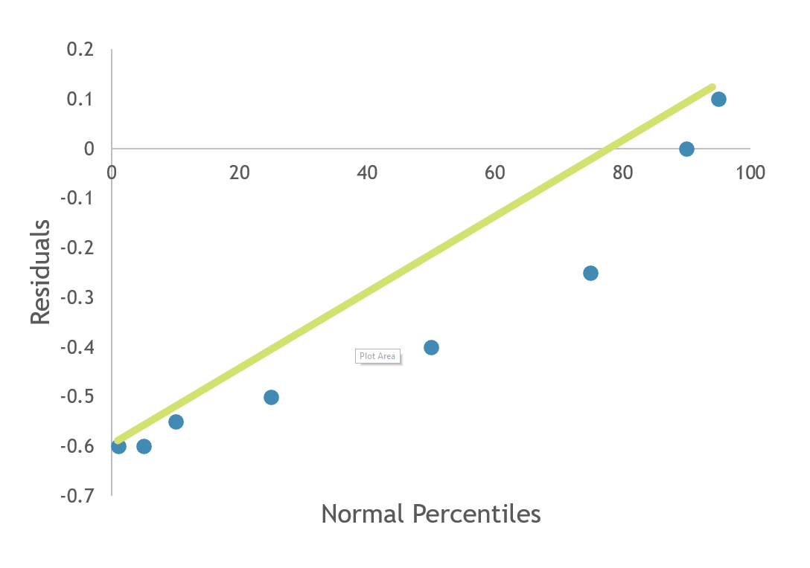
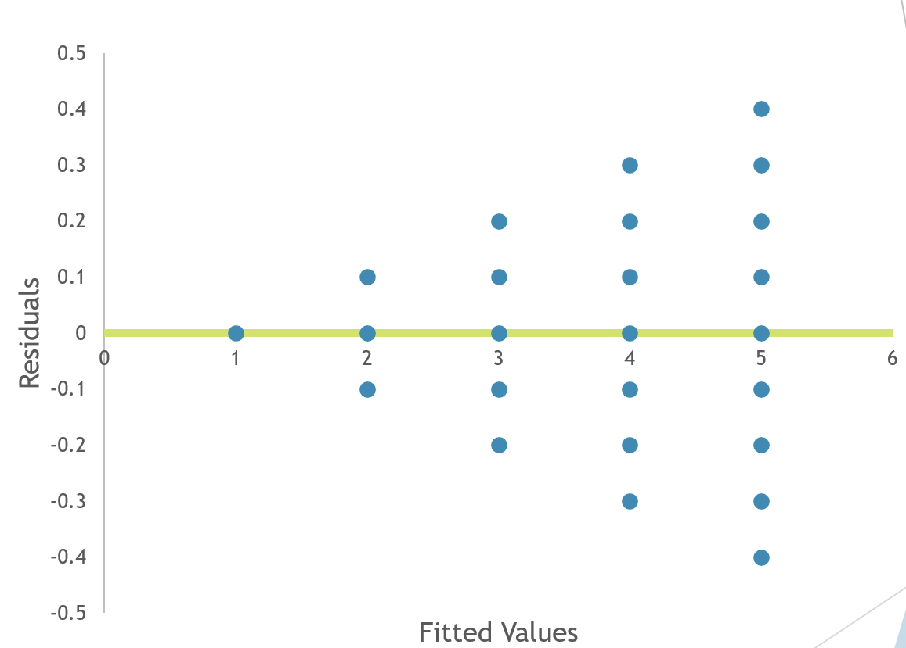
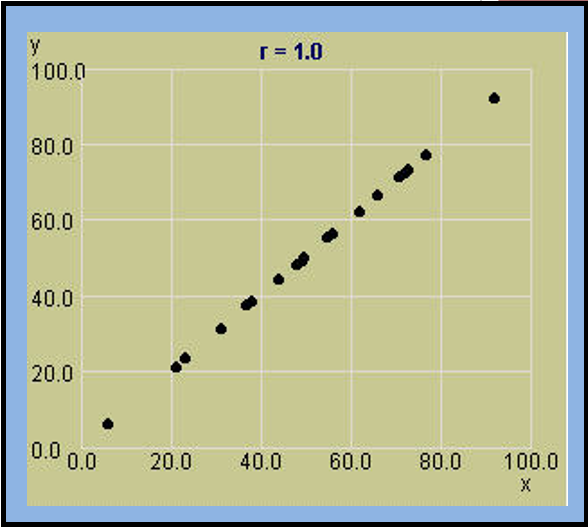
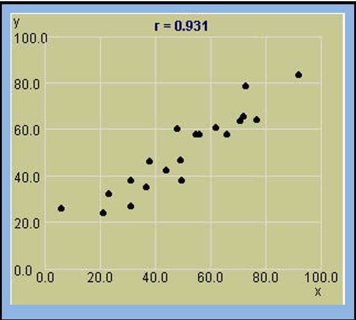
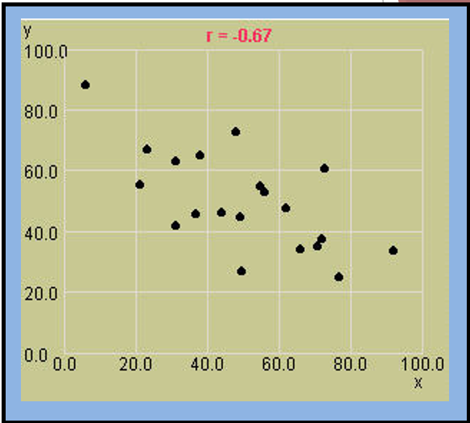

Simple Linear Regression¶
Many applications of statistics are much more complex than: - Estimating a mean or variance - Testing if the population mean or variance is equal to some value - Testing if two means are equal
Often we will use sample data to investigate the relationship between two or more variables. The ultimate goal is to create a model that can be used to predict the value of a single variable.
Regression Analysis¶
The process of finding a mathematical model (or equation) that best fits the data is part of a statistical technique known as Regression Analysis. In regression analysis, the variable to be modeled or predicted is called the dependent variable, or response variable.
Y = the dependent variable
The variables that are used to model Y are called independent variables, or regressors.
\(X_i:\) = independent variable
If we have multiple independent variables (\(X_1, X_2, ... , X_k:\)) the analysis of finding the best model is called multiple regression. We will start with a model where we have only one independent variable, X. With only one X, we have simple linear regression because the model will form a simple straight line equation.
A reasonable form of a relationship between Y and X is the linear relationship:
\(Y = β_0+β_1 𝑋\)
\(β_0\) is the intercept \(β_1\) is the slope This is called a deterministic model because if \(β_0\) and \(β_1\) are known for the population, then the value of X determines exactly the value of Y, there is no random or probabilistic component.
In the real world, we will not be able to determine \(β_0\) and \(β_1\) exactly and there will be some components that cannot be measured or explained. Thus, there will be some random component in the equation.
\(Y = β_0+β_1 𝑋 + 𝜀\) which is called a probabilistic model.
𜀠is called random error.
Error¶
Random Error is assumed to have the following properties:
E(𝜀) = 0
Var(𝜀) = σ2 (homogenous variance assumption)

Fitted Regression Line¶
We try to estimate the regression equation by obtaining sample values of X and Y. We use this sample information to estimate the values of \(β_0\) and \(β_1\) with \(b_0\) and \(b_1\). Since E(𝜀) = 0, we do not estimate error because it is expected to be zero over time. Our estimated or fitted regression line is given by:
This is an estimate of the “true†regression line. When a large amount of data is available, we expect the fitted line to be close to the true regression line. We can never draw the true regression line because this would require that we sample the entire population.
Estimating Parameters¶
How do we come up with values for \(b_0\) and \(b_1\) ?
Example
Suppose an appliance store conducts a 5-month experiment to determine the effect of advertising on sales revenue.
\(Y = β_0+β_1 𝑋 + 𝜀\)
Y = sales revenue in thousands of dollars
X = advertising expenditures in hundreds of dollars
ε = random error
Sample data is collected for different values of advertising expenditure. Sample data is of the form: {(Xi, Yi); i = 1, … n} We will use the sample data to estimate the true regression line with the fitted line \(\hat{y} = b_0 + b_1 * X\) This equation will allow us to compute predicted values of Y for the observed values of X.
Residual¶
Now, for each value of \(X_i\), we have our sample value \(y_i\) and our predicted value, \(\hat{y}_i\), obtained from the fitted line. The ith residual is defined to be the difference between the observed and predicted values.
Residual: \(e_i = y_i - \hat{y}_i\) for i = 1, 2, …, n
If our fitted model closely matches the sample data, the residuals will be small and we will have a good fit.
Thus, when finding our estimates, \(b_0\) and \(b_1\) , we wish to minimize the residuals. Since residuals can be positive or negative a common measure for looking at total residual value is called “Sum of Squares of the Errors†and is denoted SSE.
SSE is found by summing the squared residuals. Instead of minimizing residuals directly, we will attempt to minimize SSE. This minimization procedure for estimating the parameters is called the Method of Least Squares.
Method Of Least Squares¶
In order to minimize SSE we differentiate SSE with respect to \(b_0\) and \(b_1\) . The result is
and
Example
Suppose an appliance store conducts a 5-month experiment to determine the effect of advertising (X) on sales revenue (Y). Sample data is:
X |
Y |
|---|---|
1 |
1 |
2 |
1 |
3 |
2 |
4 |
2 |
5 |
4 |
Then
X |
Y |
X^2 |
XY |
|---|---|---|---|
1 |
1 |
1 |
1 |
2 |
1 |
4 |
2 |
3 |
2 |
9 |
6 |
4 |
2 |
16 |
8 |
5 |
4 |
25 |
20 |
15 |
10 |
55 |
37 |
\(\bar{x} = 3\)
\(\bar{y} = 2\)
\(n = 5\)
Then
Then the least Squares fitted line is \(\hat{y} = -0.1 + 0.7x\) . We can now calculate the Sum of Squares of the Errors (SSE)
X |
Y |
yHat |
(y-yhat)^2 |
|---|---|---|---|
1 |
1 |
0.6 |
0.16 |
2 |
1 |
1.3 |
0.09 |
3 |
2 |
2.0 |
0 |
4 |
2 |
2.7 |
0.49 |
5 |
4 |
3.4 |
0.36 |
Then SSE = \(\sum{(y_i - \hat{y_i})^2} = 1.1\)
Interpretations¶
\(β_0\) = y-intercept of the line or the point at which the line intercepts the y-axis
\(β_1\) = slope of the line or the amount of increase (or decrease) in the mean of y for every 1-unit increase in x.
In our example
\(b_0\) = -0.1 which is the point where the fitted line crosses the y-axis
\(b_1\) = 0.7 = the mean monthly sales revenue increases $700 for every $100 increase in monthly advertising expenditure. (since y is measured in units of $1,000 and x in units of $100)
What is good about least squares?¶
It Minimizes the sum of squares of vertical deviations from the sample data points to the fitted line. There are other ways to measure closeness, like the sum of the absolute value of the residuals.
but all methods force the residuals to be small.
Properties of least squares¶
Estimates b0 and b1 are based on given sample
If the experiment is repeated over and over, the estimates b0 and b1 will differ from experiment to experiment
The least square estimators are both UNBIASED estimators
\(E(b_0) = β_0\)
\(E(b_1) = β_1\)
More sum of squares equations¶
We have already defined SSE, sum of squares of error. Further sum of squares formulas will become necessary in future calculations:
\(S_{xx}\) = sum of squares of x = \(\sum{x^2_i - n(\bar{x})^2}\)
\(S_{yy}\) = sum of squares of y = \(\sum{y^2_i - n(\bar{y})^2}\)
\(S_{xy}\) = sum of squares of x and y = \(\sum{x_iy_i - n\bar{y}\bar{x}}\)
The following equalitites are also true
\(b_1 = \frac{S_{xy}}{S_{xx}}\)
\(SEE = S_{syy} - b_1S_{xy}\)
Model Assumptions¶
When we perform least squares regression we make the following assumptions about random error, ε
- The mean of ε is 0
i.e. E(ε) = 0
- The variance of ε is constant for all x
Var(ε) = σ2
- The probability distribution of ε is normal
ε ~ Normal
The error terms are independent of one another
Checking model assumptions¶
Graphical methods and statistical tests can be used to check the validity of our assumptions on error. We will use two graphs to check the first three assumptions. (Assumption of independence can also be verified with another graph. We will not be testing this in our class.)
Normal Probability plot¶
In a normal probability plot the residuals are graphed against the expected values of the residuals under the assumption of normality. If the normality assumption is valid, the plot should resemble a straight line, sloping upward to the right. If the assumption is not valid, you will often see the pattern fail in the tails of the graph, or create an obvious curve away from the straight line.

Assumption of normality is valid
{kind=link}
Assumption of normality is invalid
Residuals vs fits¶
A graph that plots the residual values ( \(e_i\) ) versus the fitted values of the regression ( \(\hat{y}\) ) can be used to check if the expected value of error is zero and if the assumption of homogenous variance is valid. If the expected value of error is zero, the plot should have most of its values around zero. If the assumption of equal variances is valid there should be no distinct pattern in the plot; we should see “random scatter”.

The figure above displays random scatter which has most of the values relatively around zero. We would conclude that the equal variance assumption and the assumption that the expected value of error is zero, are both valid.
{kind=link}
Figure 2 appears to have most of the values around zero, so our first assumption is valid. However, the plot has a distinct triangular pattern. Any pattern suggests that the equal variance assumption is not valid.
Estimation of Model Error variance¶
An unbiased estimator of \(\sigma^2\) is:
This is also called the mean square error (MSE)
Estimated Standard deviation¶
The standard deviation, S, measures the spread of the distribution of Y about the fitted least squares line. We can expect 95% of the observed Y values to lie within 2S of their respective least square predicted values
Inferences Concerning Regression Coefficients¶
Inferences on \(𝛽_1\)¶
We can estimate the linear relationship between X and Y by computing values \(b_0\) and \(b_1\) as our estimates for intercept and slope. We could also be interested in drawing inferences about the slope and intercept themselves. What are possible values that the slope could take on? How useful is X in predicting Y?
If our assumption of normality of error is valid, it follows that the Y values are also normally distributed, and thus so is 𝛽_1. From these assumptions we can create the statistic:
This statistic will follow a t-distribution with v = n – 2 degrees of freedom.
A 100(1 - 𝛼)% confidence interval for the parameter \(𝛽_1\) in the regression line is:
Where \(𝑡_{𝛼/2}\) is a value from the t-distribution with v = n – 2 degrees of freedom. From this interval we can be 100(1 - 𝛼)% confident that the slope of the true population regression line lies in this interval.
The Quantity:
Is called the standard error of \(𝛽_1\)
Example
Recall the appliance store example where we wish to determine the effect of advertising (X) on sales revenue (Y) using a 5 month experiment. Previously we came up the a fitted regression line of \(\hat{y}= -0.1 + 0.7x\)
Our estimated value of slope was 0.7. Find a 95% confidence interval for slope.
Using the data from the appliance store example
\(S_{xx} = 10\)
\(SEE = 1.1\)
\(S^2 = \frac{SEE}{n-2} = \frac{1.1}{5-2} = 0.366667\)
S = \(\sqrt{S^2} = 0.6055\)
\(b_1 = 0.7\)
\(t_{\alpha/2} = t_{0.025} = 3.182 (V = 5-2 = 3)\)
(0.091, 1.309)
0.091 < \(𝛽_1\) < 1.309
IE We are 95% sure that B1 is positive
Hypothesis Test on \(𝛽_1\)¶
A common question once the regression analysis has been complete is “Does X truly influence Y?†If X does not influence Y (X is not useful in the prediction of Y), then the value of Y does not change regardless of the value of X. This implies that the slope of the line, 𝛽_1, is zero. So to test if X is influencing Y we use the hypotheses:
\(𝛽_1 = 0\) vs \(𝛽_1 = 0\)
To test whether the slope equals zero we use the test statistic:
Which follows a t-distribution with v = n – 2. Since we are testing against a two-sided alternative ( \(Ha: 𝛽_1\) ≠0), we will reject the null hypothesis if:
Interpreting the results of this hypothesis test. If we reject \(H0: 𝛽_1\) = 0, then we conclude that the relationship between X an Y is linear and that X does contribute information to the prediction of Y. (The linear model is useful). If we do not reject \(𝛽_1\) = 0, there is no linear relationship between X and Y. Changing X has little impact on changes in Y. (X does not contribute information to the prediction of Y)
Example
Use the appliance store example and test if X contributes significant information to the prediction of Y at a 0.05 level of significance. From the previous example:
n = 5
\(𝛽_{xx} = 10\)
\(S = 0.6055\)
\(b_1 = 0.7\)
\(H_0: 𝛽_1 = 0\)
\(H_0: 𝛽_1 \ne 0\)
Critical value: \(t_{\alpha/2} = t_{0.025} = 3.182\) (v=3)
Reject \(H_0\) if |T| > 3.182
3.66 > 3.182
Reject H0. There is sufficient evidence, at the 0.05 level, that advertising expenditure contributes information to predicting sales revenue.
Note: If the confidence interval for 𝛽_1 does not contain zero we can conclude that the true value of 𝛽_1 is not zero and we can reject the null hypothesis \(𝛽_1\) = 0.
Inferences on \(𝛽_0\)
We are often more interested in inferences about slope than those on the y-intercept, but it is possible to create confidence intervals and hypothesis tests for 𝛽_0. These inferences are based on the statistic:
Which follows a t-distribution with v = n – 2.
Confidence Interval for \(𝛽_0\)¶
A 100(1 - 𝛼)% confidence interval for the parameter \(𝛽_0\) in the regression line is:
Where 𝑡_(𝛼/2) is a value from the t-distribution with v = n – 2 degrees of freedom. From this interval we can be 100(1 - 𝛼)% confident that the intercept of the true population regression line lies in this interval.
Hypothesis Test on \(𝛽_0\)¶
When testing the hypotheses \(𝛽_1 = 0\) vs \(𝛽_1 = 0\) at the :math:`` level of significance, the test statistic is:
We will reject \(H_0\) if |T| > \(t_\alpha/2\) with \(t_\alpha/2\) from a t-distribution with v = n - 2.
Example
Create a 95% confidence interval for \(𝛽_0\) from the appliance store example.
n = 5
\(b_0\) = -0.1
S_{xx} = 10
\(\sum{x^2_i}\) = 55
S = 0.6055
\(t_{\alpha/2} = 3.182\) (v=3)
-2.12 < \(𝛽_0\) < 1.92
Coefficient of determination¶
If the independent variable X is useful in predicting Y (we reject H0: 𝛽_1= 0), then we will want to know how well the model fits. The quality of fit is measured by the proportion of the variability explained by the fitted model. Variance due to error is unexplained variation. Thus, we wish to measure how much SSE has been reduced by using X as a predictor of Y.
The total corrected sum of squares is denoted SST and is equal to what we have already defined to be Syy.
This quantity defines the total amount of variation present in the data.
The coefficient of determination denoted R2, measures the proportion of variation explained by the model.
Since SSE is the variation that is unexplained, if SSE = 0, all of the variation is explained and we would have a perfect fit. Then R2 = 1
If X contributes no information in the prediction of Y then no variation is explain and SSE = SST. Then R2 = 0. If R2 is large (close to one), the model explains a large portion of the variation; we have a good fit. If R2 is small (close to zero), the model only explains a small portion of the variation; we have a poor fit.
Interpreting R2¶
R2 is often quoted due to its simplicity. Some scientific phenomena leads to higher precisions than other. R2 is not good to use when comparing competing models for the same data set. R2 can be artificially inflated by inclusion of additional data points or inclusion of additional model terms (more independent variables). This is called overfitting.
Example
Suppose an appliance store conducts a 5-month experiment to determine the effect of advertising (X) on sales revenue (Y).
X |
Y |
|---|---|
1 |
1 |
2 |
1 |
3 |
2 |
4 |
2 |
5 |
4 |
And the fitted least squares line is: \(\hat{y} = -0.1 + 0.7x\) and SSE = 1.1
\(\bar{y} = \frac{10}{5} = 2\)
\(\sum{y^2_i} = 26\)
SST = \(\sum{y^2_i} - n(\bar{y})^2 = 26 - 5(2^2)\)
\(R^2 = 1 - \frac{SSE}{SST} = 1 - \frac{1.1}{6}\) = 0.817
About 82% of the sample variation in Y is explained by using X in the straight line model.
Coefficient of Correlation¶
Previously we have discussed the coefficient of determination (R2) which measures the amount of variation in Y that is explained by the model. Correlation implies a relationship or association between two variables. The coefficient of correlation is a measure of strength of the linear relationship between X and Y.
The population correlation coefficient is denoted as 𜌠(Greek letter rho) We estimate this value with the sample correlation coefficient
Properties 1. r will have the same sign as \(b_1\) 2. \(-1 \ge r \ge 1\)
Interpretations¶
If r = 0 there is no linear relationship between X and Y.
If r = 1 or -1 then all of the points lie exactly on the least squares line. (Prefect linear fit)
If r is close to 1 or -1 there is a strong linear relationship.
If r is positive then Y increases as X increases.
If r is negative then Y decreases as X increases.
{kind=link}
No Correlation. r = 0
{kind=link}
Perfect linear relationship r = 1
{kind=link}
Strong Positive correlation, r = 0.931
{kind=link}
Weaker negative correlation, r = -0.67
Example
An appliance store conducts a 5-month experiment to determine the effect of advertising (X) on sales revenue (Y). From previous work:
\(S_{xy} = 7\)
\(S_{xx} = 10\)
\(S_{yy} = 6\)
Find an estimate for the coefficient of correlation.
There is a strong positive linear correlation between X and Y.
Also note that \(R^2 = (r)^2 = 0.904^2 = 0.817\)
Estimation and Prediction¶
The fitted line can be used for two purposes: - Estimating the average value of Y for a given value of X. (estimating E(Y)) - Predicting a particular value of Y for a given value of X. (predicting y0)
Note: when estimating or predicting we are doing so for a certain value of X. This value of X does not have to be in the sample data.
Estimation¶
Suppose we wish to construct a confidence interval for the mean response of Y at a specific value of X. (confidence interval for E(Y) at X = x0) The best estimate we have for E(Y) is by plugging in x0 into our fitted line.
A 100(1 – α)% confidence interval for the mean response E(Y) at a given X = x0 is:
Where \(t_{\alpha/2}\) is a value from the t-distribution with v = n – 2.
Example
Use the data from the appliance store example to create a 95% confidence interval for the mean response of Y when X = 5.
From Previous work we know
\(\hat{y} = -0.1 + 0.7x\)
S = 0.6055
\(S_{xx}\) = 10
\(\bar{x}\) = 3
n = 5
\(t_{\alpha/2}\) = \(t_{0.025}\) = 3.182 (v = 5-2 = 3)
So
Prediction¶
We are interested in predicting a specific value of Y instead of just obtaining an estimate for the mean value. Particular values of Y are more difficult to predict and thus require a wider range of values in the interval. There is some additional error in the prediction because of the deviation of Y from the line of means. The error in using the fitted line to estimate the line of means The error caused by deviation of y from the line of means, measure by \(σ^2\)
Prediction Interval for Y¶
A 100(1 – α)% prediction interval for a single response y0 at a given X = x0 is:
Example
Using the same information from example 1, we can create a prediction interval for y0 when X = 5, in the appliance store problem.
Interpretations of confidence and prediction intervals:
- The confidence interval interpretation is the same as the one we studied earlier in ch.9
We are 100(1 – α)% confidence that the true mean response is within the interval
The prediction interval represents an interval that has a probability of (1 – α) of containing a future value of y0 when X = x0
Confidence vs. Prediction Intervals
Confidence bands are narrower than the prediction bands for every value of X.
Predictions are always more variable than the estimates of the mean value.
The bands will be wider as the value of x0 gets farther from ğ‘¥Â Ì….
In practice, estimation and prediction are more accurate when x0 is near the center of the range of the x-values.
{kind=link}
Confidence Bands